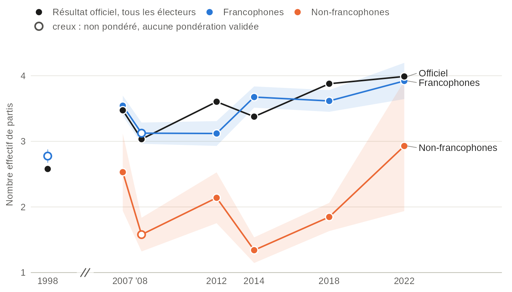
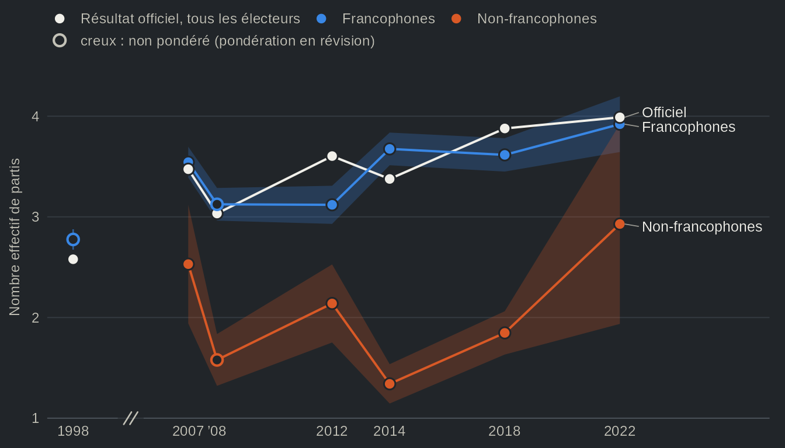
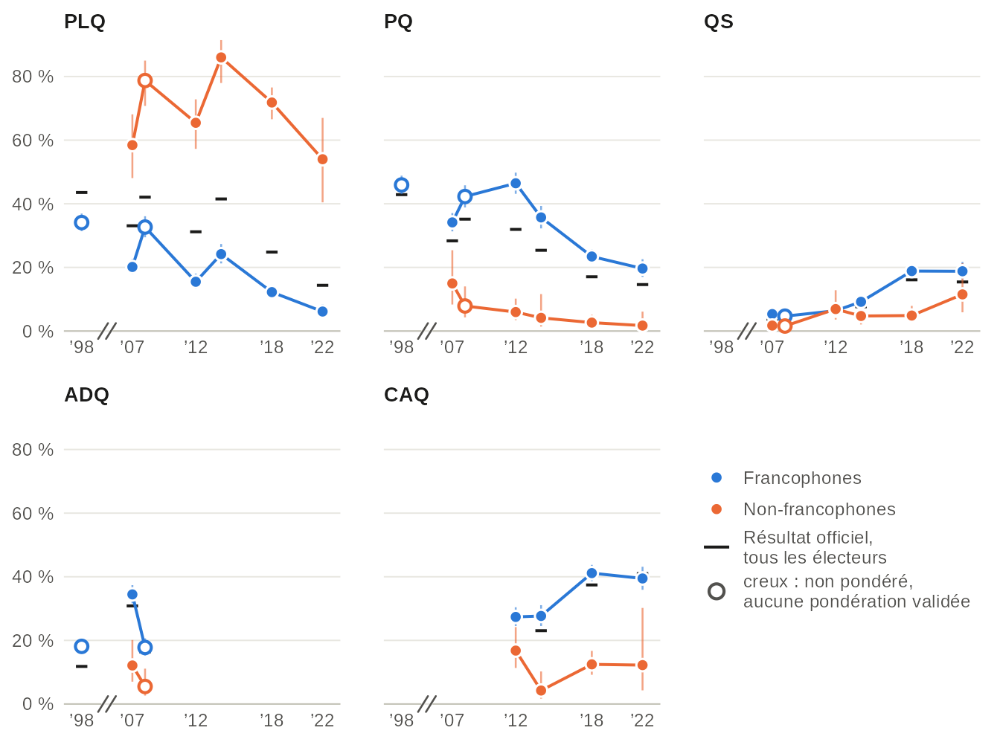
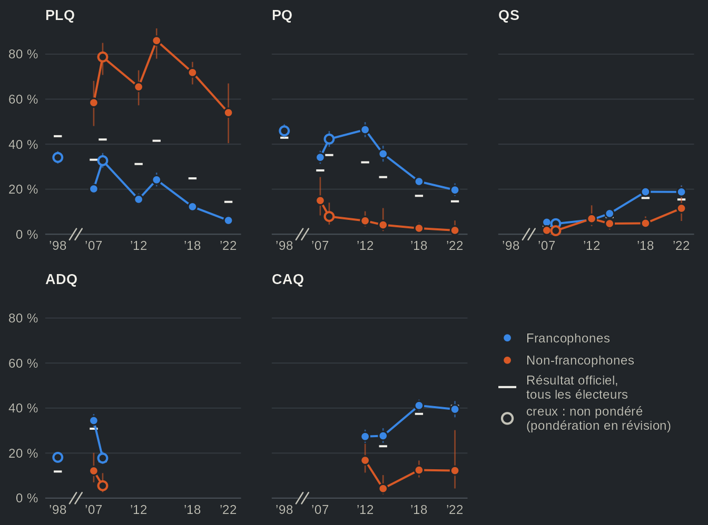
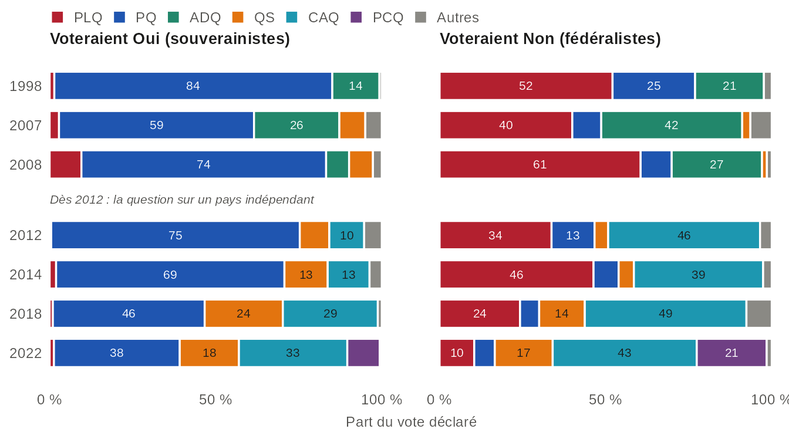
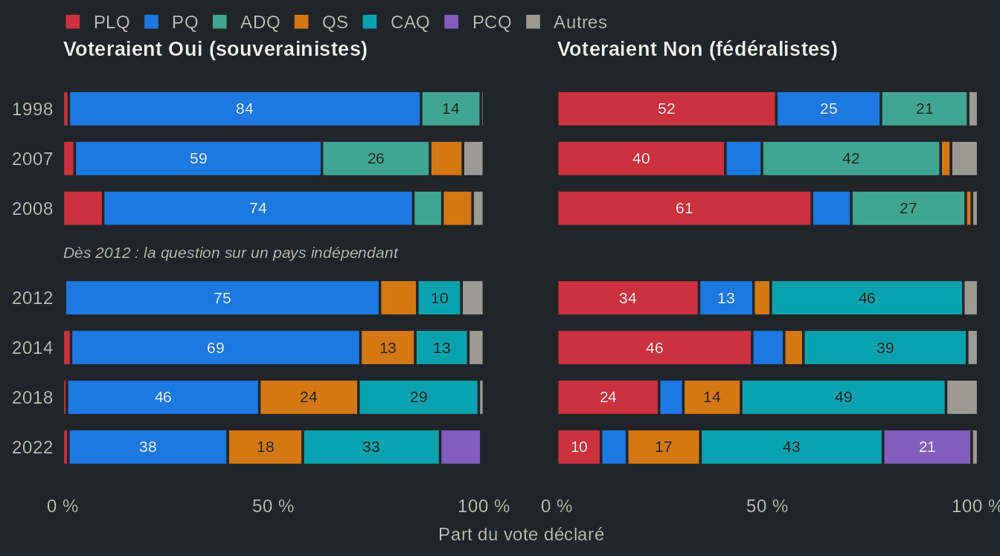
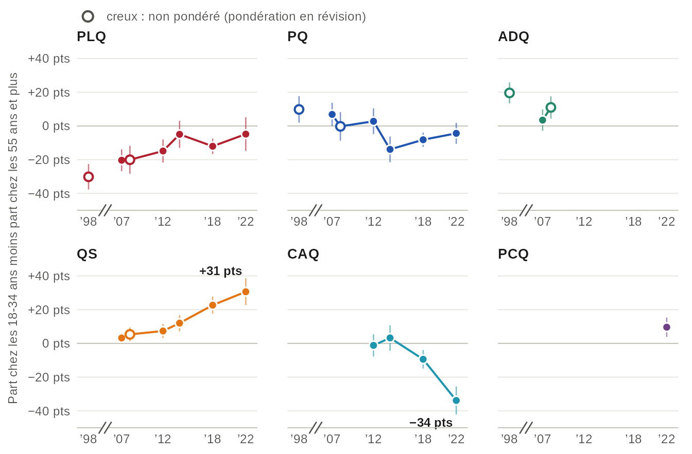
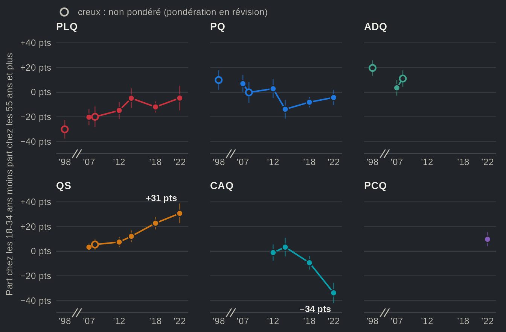

De deux partis à quatre : le système partisan québécois, 1998-2022
Source:vignettes/articles/fr-realignement.Rmd
fr-realignement.RmdPendant une trentaine d’années, le système partisan québécois a reposé sur la question de la souveraineté. À partir des années 1970, le Parti québécois (PQ) et le Parti libéral du Québec (PLQ) se sont succédé au pouvoir, et la position des Québécois sur l’indépendance expliquait pour une bonne part leur vote. En 1998, les deux partis obtenaient encore 86 % des votes valides. Or, après la percée de l’Action démocratique du Québec (ADQ) en 2007, Bélanger et Nadeau (2009) se demandaient si le récent changement de comportement des électeurs relevait d’un incident de parcours ou d’une transformation durable du paysage politique québécois. La montée de Québec solidaire (QS) et de la Coalition avenir Québec (CAQ) a depuis tranché cette question en partie. En 2022, cinq partis ont chacun obtenu plus de 12 % des voix, et le nombre effectif de partis (Laakso et Taagepera, 1979) est passé de 2,6 en 1998 à 4,0, soit l’équivalent de quatre partis de taille égale. Il est désormais courant d’affirmer que le système s’est fragmenté, et l’élection de 2018, qui a mis fin à l’alternance du PQ et du PLQ au pouvoir, sert de point de départ aux travaux récents sur le « nouvel électeur québécois » (Bélanger et collaborateurs, 2022). Les résultats officiels nous disent dans quelle mesure le système s’est fragmenté. Ils ne nous disent toutefois pas chez qui, ni si la question de la souveraineté structure encore le vote.
Les Études électorales québécoises apportent une réponse assez nette à ces deux questions. Premier constat : la fragmentation touche d’abord le vote francophone. Chez les francophones, le nombre effectif de partis passe de 2,8 en 1998 à 3,9 en 2022. L’estimation de 1998 provient toutefois des sondages CROP et CREATEC, qui n’ont interrogé que des francophones et ne sont pas pondérés ; depuis la première Étude électorale québécoise, en 2007, la hausse est plus modeste, de 3,5 à 3,9. Les non-francophones, eux, ont continué de voter libéral jusqu’en 2018 : cette année-là, 72 % d’entre eux ont appuyé le PLQ, contre 12 % des francophones. Deuxième constat : la question de la souveraineté divise toujours le vote francophone, mais elle ne le canalise plus vers deux partis. Depuis 2012, les souverainistes ne votent presque jamais pour le PLQ et les fédéralistes votent rarement pour le PQ ; pourtant, la part des francophones qui ont voté pour le parti de leur propre camp est passée de 55 % en 2012 à 22 % en 2022. Autrement dit, savoir où un électeur francophone se situe sur l’indépendance nous renseigne désormais davantage sur le parti qu’il écartera que sur celui qu’il choisira. L’idée selon laquelle la question de la souveraineté se serait effacée des élections québécoises ne trouve donc qu’un appui mitigé.
Le vote francophone s’est fragmenté le premier


Source : Études électorales québécoises (une par élection) et, pour 1998, les sondages CROP et CREATEC, qui n'ont interrogé que des francophones, chacun selon sa propre définition (la langue maternelle pour CREATEC, la langue parlée le plus souvent à la maison pour CROP) ; résultats officiels d'Élections Québec. Le nombre effectif de partis (Laakso et Taagepera, 1979) est 1 divisé par la somme des carrés des parts de vote ; les petits partis sont regroupés en une seule catégorie, « autres ». Bandes : intervalles de confiance à 95 %. Points creux (1998, 2008) : données non pondérées. L'axe horizontal est en années, avec une coupure entre 1998 et 2007.
Vue en tableau
| Élection | Étude | Groupe | Nombre effectif [IC à 95 %] | n | Officiel, tous les électeurs | Pondération |
|---|---|---|---|---|---|---|
| 1998 | Sondages de 1998 | Francophones | 2,78 [2,67 ; 2,88] | 1126 | 2,58 | non pondéré (pondération en révision) |
| 1998 | Sondages de 1998 | Non-francophones | n < 30 | 0 | 2,58 | non pondéré (pondération en révision) |
| 2007 | EEQ 2007 | Francophones | 3,54 [3,39 ; 3,70] | 1525 | 3,47 | pondéré |
| 2007 | EEQ 2007 | Non-francophones | 2,53 [1,94 ; 3,12] | 163 | 3,47 | pondéré |
| 2007 | Panel 2007 | Francophones | 3,45 [3,34 ; 3,56] | 1337 | 3,47 | non pondéré (pondération en révision) |
| 2007 | Panel 2007 | Non-francophones | 1,78 [1,49 ; 2,06] | 155 | 3,47 | non pondéré (pondération en révision) |
| 2008 | EEQ 2008 | Francophones | 3,12 [2,96 ; 3,29] | 771 | 3,03 | non pondéré (pondération en révision) |
| 2008 | EEQ 2008 | Non-francophones | 1,58 [1,32 ; 1,84] | 127 | 3,03 | non pondéré (pondération en révision) |
| 2012 | EEQ 2012 | Francophones | 3,12 [2,93 ; 3,31] | 1094 | 3,60 | pondéré |
| 2012 | EEQ 2012 | Non-francophones | 2,14 [1,75 ; 2,53] | 180 | 3,60 | pondéré |
| 2012 | Panel 2012 | Francophones | 3,42 [3,20 ; 3,64] | 576 | 3,60 | non pondéré (pondération en révision) |
| 2012 | Panel 2012 | Non-francophones | 2,31 [1,59 ; 3,03] | 57 | 3,60 | non pondéré (pondération en révision) |
| 2014 | EEQ 2014 | Francophones | 3,68 [3,51 ; 3,84] | 981 | 3,38 | pondéré |
| 2014 | EEQ 2014 | Non-francophones | 1,34 [1,15 ; 1,54] | 201 | 3,38 | pondéré |
| 2018 | EEQ 2018 | Francophones | 3,62 [3,45 ; 3,78] | 1656 | 3,88 | pondéré |
| 2018 | EEQ 2018 | Non-francophones | 1,85 [1,63 ; 2,06] | 359 | 3,88 | pondéré |
| 2018 | Panel 2018 | Francophones | 3,48 [3,11 ; 3,85] | 560 | 3,88 | pondéré |
| 2018 | Panel 2018 | Non-francophones | 2,02 [1,64 ; 2,40] | 143 | 3,88 | pondéré |
| 2022 | EEQ 2022 | Francophones | 3,92 [3,64 ; 4,20] | 883 | 3,99 | pondéré |
| 2022 | EEQ 2022 | Non-francophones | 2,93 [1,94 ; 3,92] | 121 | 3,99 | pondéré |
Les deux courbes tirées des enquêtes ne dessinent pas du tout le même portrait. Chez les francophones, le nombre effectif de partis a augmenté sur l’ensemble de la période, mais pas de façon continue. Il atteint un premier sommet en 2007 (3,5), l’année de la percée adéquiste, redescend à 3,1 en 2012 et ne passe plus sous 3,6 depuis 2014. Chez les non-francophones, il était de 2,5 en 2007, alors que le PLQ recueillait 58 % de leurs voix, puis il s’est maintenu entre 1,3 et 2,1 de 2008 à 2018 : un vote largement dominé par le PLQ. Il atteint 2,9 en 2022, alors que le PLQ ne recueille plus que 54 % de leurs voix. Cela dit, seuls 121 électeurs non francophones ont répondu cette année-là, et l’intervalle va de 1,9 à 3,9, ce qui inclut la valeur de 2007. La hausse est nette par rapport aux élections de 2008 à 2018 ; son ampleur l’est beaucoup moins.
Les courbes des enquêtes suivent de près la courbe officielle, sans toutefois s’y superposer. Les enquêtes surestiment certains partis et en sous-estiment d’autres (voir Les enquêtes face aux résultats officiels). En 2022, par exemple, 33 % des répondants déclarent avoir voté pour la CAQ, alors que le parti a obtenu 41 % des votes valides. L’enquête fait donc paraître le vote de 2022 plus fragmenté qu’il ne l’était (4,7 partis effectifs chez l’ensemble des répondants, contre 4,0 selon les résultats officiels). Ces courbes renseignent ainsi davantage sur l’écart entre les deux groupes et son évolution que sur leur niveau.
Parti par parti, le clivage linguistique a tenu


Source : Études électorales québécoises (une par élection) et, pour 1998, les sondages CROP et CREATEC (francophones seulement). Trait : part officielle des votes valides, tous les électeurs. Barres : intervalles de confiance à 95 %. Points creux (1998, 2008) : données non pondérées. Les groupes de moins de 30 répondants ne sont pas tracés. L'ADQ a fusionné avec la CAQ en 2012 ; les deux restent distincts ici. Le PCQ et les petits partis sont dans la vue en tableau.
Vue en tableau
| Parti | Élection | Étude | Groupe | Part du vote déclaré [IC à 95 %] | n | Officiel, tous les électeurs | Pondération |
|---|---|---|---|---|---|---|---|
| PLQ | 1998 | Sondages de 1998 | Francophones | 34,1 [31,4 ; 36,9] | 1126 | 43,6 | non pondéré (pondération en révision) |
| PLQ | 2007 | EEQ 2007 | Francophones | 20,1 [17,9 ; 22,6] | 1525 | 33,1 | pondéré |
| PLQ | 2007 | EEQ 2007 | Non-francophones | 58,4 [48,1 ; 68,1] | 163 | 33,1 | pondéré |
| PLQ | 2007 | Panel 2007 | Francophones | 23,5 [21,3 ; 25,8] | 1337 | 33,1 | non pondéré (pondération en révision) |
| PLQ | 2007 | Panel 2007 | Non-francophones | 73,5 [66,1 ; 79,9] | 155 | 33,1 | non pondéré (pondération en révision) |
| PLQ | 2008 | EEQ 2008 | Francophones | 32,7 [29,5 ; 36,1] | 771 | 42,1 | non pondéré (pondération en révision) |
| PLQ | 2008 | EEQ 2008 | Non-francophones | 78,7 [70,8 ; 85,0] | 127 | 42,1 | non pondéré (pondération en révision) |
| PLQ | 2012 | EEQ 2012 | Francophones | 15,5 [13,2 ; 18,0] | 1094 | 31,2 | pondéré |
| PLQ | 2012 | EEQ 2012 | Non-francophones | 65,5 [57,3 ; 72,8] | 180 | 31,2 | pondéré |
| PLQ | 2012 | Panel 2012 | Francophones | 22,7 [19,5 ; 26,3] | 576 | 31,2 | non pondéré (pondération en révision) |
| PLQ | 2012 | Panel 2012 | Non-francophones | 63,2 [50,0 ; 74,6] | 57 | 31,2 | non pondéré (pondération en révision) |
| PLQ | 2014 | EEQ 2014 | Francophones | 24,2 [21,3 ; 27,4] | 981 | 41,5 | pondéré |
| PLQ | 2014 | EEQ 2014 | Non-francophones | 86,0 [78,0 ; 91,4] | 201 | 41,5 | pondéré |
| PLQ | 2018 | EEQ 2018 | Francophones | 12,2 [10,7 ; 13,9] | 1656 | 24,8 | pondéré |
| PLQ | 2018 | EEQ 2018 | Non-francophones | 71,8 [66,6 ; 76,6] | 359 | 24,8 | pondéré |
| PLQ | 2018 | Panel 2018 | Francophones | 16,1 [13,0 ; 19,7] | 560 | 24,8 | pondéré |
| PLQ | 2018 | Panel 2018 | Non-francophones | 67,8 [59,0 ; 75,5] | 143 | 24,8 | pondéré |
| PLQ | 2022 | EEQ 2022 | Francophones | 6,1 [4,4 ; 8,4] | 883 | 14,4 | pondéré |
| PLQ | 2022 | EEQ 2022 | Non-francophones | 54,0 [40,5 ; 67,0] | 121 | 14,4 | pondéré |
| PQ | 1998 | Sondages de 1998 | Francophones | 45,9 [43,0 ; 48,8] | 1126 | 42,9 | non pondéré (pondération en révision) |
| PQ | 2007 | EEQ 2007 | Francophones | 34,1 [31,3 ; 37,1] | 1525 | 28,3 | pondéré |
| PQ | 2007 | EEQ 2007 | Non-francophones | 15,0 [8,3 ; 25,4] | 163 | 28,3 | pondéré |
| PQ | 2007 | Panel 2007 | Francophones | 33,4 [31,0 ; 36,0] | 1337 | 28,3 | non pondéré (pondération en révision) |
| PQ | 2007 | Panel 2007 | Non-francophones | 7,7 [4,4 ; 13,1] | 155 | 28,3 | non pondéré (pondération en révision) |
| PQ | 2008 | EEQ 2008 | Francophones | 42,3 [38,8 ; 45,8] | 771 | 35,2 | non pondéré (pondération en révision) |
| PQ | 2008 | EEQ 2008 | Non-francophones | 7,9 [4,3 ; 14,0] | 127 | 35,2 | non pondéré (pondération en révision) |
| PQ | 2012 | EEQ 2012 | Francophones | 46,4 [43,1 ; 49,8] | 1094 | 31,9 | pondéré |
| PQ | 2012 | EEQ 2012 | Non-francophones | 6,0 [3,4 ; 10,2] | 180 | 31,9 | pondéré |
| PQ | 2012 | Panel 2012 | Francophones | 41,3 [37,4 ; 45,4] | 576 | 31,9 | non pondéré (pondération en révision) |
| PQ | 2012 | Panel 2012 | Non-francophones | 8,8 [3,7 ; 19,4] | 57 | 31,9 | non pondéré (pondération en révision) |
| PQ | 2014 | EEQ 2014 | Francophones | 35,7 [32,3 ; 39,3] | 981 | 25,4 | pondéré |
| PQ | 2014 | EEQ 2014 | Non-francophones | 4,1 [1,4 ; 11,6] | 201 | 25,4 | pondéré |
| PQ | 2018 | EEQ 2018 | Francophones | 23,4 [21,3 ; 25,7] | 1656 | 17,1 | pondéré |
| PQ | 2018 | EEQ 2018 | Non-francophones | 2,6 [1,4 ; 5,1] | 359 | 17,1 | pondéré |
| PQ | 2018 | Panel 2018 | Francophones | 18,0 [14,6 ; 22,1] | 560 | 17,1 | pondéré |
| PQ | 2018 | Panel 2018 | Non-francophones | 2,9 [1,1 ; 7,5] | 143 | 17,1 | pondéré |
| PQ | 2022 | EEQ 2022 | Francophones | 19,6 [17,0 ; 22,6] | 883 | 14,6 | pondéré |
| PQ | 2022 | EEQ 2022 | Non-francophones | 1,7 [0,5 ; 6,1] | 121 | 14,6 | pondéré |
| ADQ | 1998 | Sondages de 1998 | Francophones | 18,1 [16,0 ; 20,5] | 1126 | 11,8 | non pondéré (pondération en révision) |
| ADQ | 2007 | EEQ 2007 | Francophones | 34,4 [31,7 ; 37,4] | 1525 | 30,8 | pondéré |
| ADQ | 2007 | EEQ 2007 | Non-francophones | 12,1 [7,0 ; 20,1] | 163 | 30,8 | pondéré |
| ADQ | 2007 | Panel 2007 | Francophones | 34,6 [32,1 ; 37,1] | 1337 | 30,8 | non pondéré (pondération en révision) |
| ADQ | 2007 | Panel 2007 | Non-francophones | 11,6 [7,4 ; 17,7] | 155 | 30,8 | non pondéré (pondération en révision) |
| ADQ | 2008 | EEQ 2008 | Francophones | 17,8 [15,2 ; 20,6] | 771 | 16,4 | non pondéré (pondération en révision) |
| ADQ | 2008 | EEQ 2008 | Non-francophones | 5,5 [2,6 ; 11,1] | 127 | 16,4 | non pondéré (pondération en révision) |
| QS | 2007 | EEQ 2007 | Francophones | 5,3 [4,0 ; 7,0] | 1525 | 3,6 | pondéré |
| QS | 2007 | EEQ 2007 | Non-francophones | 1,7 [0,4 ; 7,1] | 163 | 3,6 | pondéré |
| QS | 2007 | Panel 2007 | Francophones | 4,0 [3,0 ; 5,2] | 1337 | 3,6 | non pondéré (pondération en révision) |
| QS | 2007 | Panel 2007 | Non-francophones | 2,6 [1,0 ; 6,7] | 155 | 3,6 | non pondéré (pondération en révision) |
| QS | 2008 | EEQ 2008 | Francophones | 4,7 [3,4 ; 6,4] | 771 | 3,8 | non pondéré (pondération en révision) |
| QS | 2008 | EEQ 2008 | Non-francophones | 1,6 [0,4 ; 6,1] | 127 | 3,8 | non pondéré (pondération en révision) |
| QS | 2012 | EEQ 2012 | Francophones | 6,4 [5,0 ; 8,1] | 1094 | 6,0 | pondéré |
| QS | 2012 | EEQ 2012 | Non-francophones | 6,9 [3,6 ; 12,8] | 180 | 6,0 | pondéré |
| QS | 2012 | Panel 2012 | Francophones | 6,9 [5,1 ; 9,3] | 576 | 6,0 | non pondéré (pondération en révision) |
| QS | 2012 | Panel 2012 | Non-francophones | 8,8 [3,7 ; 19,4] | 57 | 6,0 | non pondéré (pondération en révision) |
| QS | 2014 | EEQ 2014 | Francophones | 9,2 [7,5 ; 11,2] | 981 | 7,6 | pondéré |
| QS | 2014 | EEQ 2014 | Non-francophones | 4,7 [2,1 ; 10,4] | 201 | 7,6 | pondéré |
| QS | 2018 | EEQ 2018 | Francophones | 18,9 [16,9 ; 20,9] | 1656 | 16,1 | pondéré |
| QS | 2018 | EEQ 2018 | Non-francophones | 4,9 [3,0 ; 7,9] | 359 | 16,1 | pondéré |
| QS | 2018 | Panel 2018 | Francophones | 14,7 [11,4 ; 18,9] | 560 | 16,1 | pondéré |
| QS | 2018 | Panel 2018 | Non-francophones | 5,3 [2,8 ; 9,9] | 143 | 16,1 | pondéré |
| QS | 2022 | EEQ 2022 | Francophones | 18,8 [16,2 ; 21,7] | 883 | 15,4 | pondéré |
| QS | 2022 | EEQ 2022 | Non-francophones | 11,5 [5,9 ; 21,3] | 121 | 15,4 | pondéré |
| CAQ | 2012 | EEQ 2012 | Francophones | 27,4 [24,5 ; 30,4] | 1094 | 27,1 | pondéré |
| CAQ | 2012 | EEQ 2012 | Non-francophones | 16,8 [11,3 ; 24,2] | 180 | 27,1 | pondéré |
| CAQ | 2012 | Panel 2012 | Francophones | 25,2 [21,8 ; 28,9] | 576 | 27,1 | non pondéré (pondération en révision) |
| CAQ | 2012 | Panel 2012 | Non-francophones | 10,5 [4,8 ; 21,5] | 57 | 27,1 | non pondéré (pondération en révision) |
| CAQ | 2014 | EEQ 2014 | Francophones | 27,7 [24,5 ; 31,1] | 981 | 23,1 | pondéré |
| CAQ | 2014 | EEQ 2014 | Non-francophones | 4,2 [1,7 ; 10,2] | 201 | 23,1 | pondéré |
| CAQ | 2018 | EEQ 2018 | Francophones | 41,1 [38,6 ; 43,7] | 1656 | 37,4 | pondéré |
| CAQ | 2018 | EEQ 2018 | Non-francophones | 12,5 [9,2 ; 16,7] | 359 | 37,4 | pondéré |
| CAQ | 2018 | Panel 2018 | Francophones | 45,1 [40,2 ; 50,2] | 560 | 37,4 | pondéré |
| CAQ | 2018 | Panel 2018 | Non-francophones | 16,2 [10,5 ; 24,2] | 143 | 37,4 | pondéré |
| CAQ | 2022 | EEQ 2022 | Francophones | 39,5 [35,9 ; 43,1] | 883 | 41,0 | pondéré |
| CAQ | 2022 | EEQ 2022 | Non-francophones | 12,2 [4,3 ; 30,2] | 121 | 41,0 | pondéré |
| PCQ | 2022 | EEQ 2022 | Francophones | 14,7 [12,2 ; 17,6] | 883 | 12,9 | pondéré |
| PCQ | 2022 | EEQ 2022 | Non-francophones | 9,4 [5,1 ; 16,7] | 121 | 12,9 | pondéré |
| Autres | 1998 | Sondages de 1998 | Francophones | 1,9 [1,2 ; 2,8] | 1126 | 1,8 | non pondéré (pondération en révision) |
| Autres | 2007 | EEQ 2007 | Francophones | 5,9 [4,6 ; 7,6] | 1525 | 4,1 | pondéré |
| Autres | 2007 | EEQ 2007 | Non-francophones | 12,8 [7,3 ; 21,4] | 163 | 4,1 | pondéré |
| Autres | 2007 | Panel 2007 | Francophones | 4,6 [3,6 ; 5,8] | 1337 | 4,1 | non pondéré (pondération en révision) |
| Autres | 2007 | Panel 2007 | Non-francophones | 4,5 [2,2 ; 9,2] | 155 | 4,1 | non pondéré (pondération en révision) |
| Autres | 2008 | EEQ 2008 | Francophones | 2,6 [1,7 ; 4,0] | 771 | 2,6 | non pondéré (pondération en révision) |
| Autres | 2008 | EEQ 2008 | Non-francophones | 6,3 [3,2 ; 12,1] | 127 | 2,6 | non pondéré (pondération en révision) |
| Autres | 2012 | EEQ 2012 | Francophones | 4,3 [3,3 ; 5,7] | 1094 | 3,6 | pondéré |
| Autres | 2012 | EEQ 2012 | Non-francophones | 4,9 [2,5 ; 9,4] | 180 | 3,6 | pondéré |
| Autres | 2012 | Panel 2012 | Francophones | 3,8 [2,5 ; 5,7] | 576 | 3,6 | non pondéré (pondération en révision) |
| Autres | 2012 | Panel 2012 | Non-francophones | 8,8 [3,7 ; 19,4] | 57 | 3,6 | non pondéré (pondération en révision) |
| Autres | 2014 | EEQ 2014 | Francophones | 3,2 [2,2 ; 4,7] | 981 | 2,0 | pondéré |
| Autres | 2014 | EEQ 2014 | Non-francophones | 0,9 [0,3 ; 2,4] | 201 | 2,0 | pondéré |
| Autres | 2018 | EEQ 2018 | Francophones | 4,3 [3,3 ; 5,6] | 1656 | 3,1 | pondéré |
| Autres | 2018 | EEQ 2018 | Non-francophones | 8,2 [5,6 ; 11,8] | 359 | 3,1 | pondéré |
| Autres | 2018 | Panel 2018 | Francophones | 6,0 [4,0 ; 9,1] | 560 | 3,1 | pondéré |
| Autres | 2018 | Panel 2018 | Non-francophones | 7,7 [4,3 ; 13,5] | 143 | 3,1 | pondéré |
| Autres | 2022 | EEQ 2022 | Francophones | 1,3 [0,7 ; 2,5] | 883 | 1,7 | pondéré |
| Autres | 2022 | EEQ 2022 | Non-francophones | 11,2 [5,1 ; 22,7] | 121 | 1,7 | pondéré |
Le PLQ est demeuré le parti des non-francophones. Il a obtenu 58 % de leurs voix en 2007, 86 % en 2014 et encore 54 % en 2022, sa part la plus faible de la période. Chez les francophones, en revanche, sa part est passée de 34 % en 1998 à 6 % en 2022, bien en deçà de son résultat officiel de 14 % cette année-là. Le PQ, lui, n’a jamais compté beaucoup d’électeurs non francophones (15 % en 2007) et n’en conserve presque plus (2 % en 2022).
Les victoires de la CAQ sont, quant à elles, des victoires francophones. En 2018, elle a obtenu 41 % du vote francophone et 12 % de celui des autres électrices et électeurs ; en 2022, 39 % et 12 %. Comme l’ADQ avant elle, elle rejoint à peine les non-francophones. Les deux partis qui ont le mieux transcendé le clivage linguistique en 2022 sont ceux dont la percée est la plus récente. Québec solidaire, qui a d’abord progressé chez les francophones (19 % en 2018), a obtenu 19 % des francophones et 12 % des autres ; le Parti conservateur du Québec (PCQ), 15 % et 9 %. Avec si peu de répondants non francophones, ces écarts demeurent incertains. À partir de la même enquête de 2022, Bélanger et collaborateurs (2025) montrent que, contrairement à la plupart des autres partis, le PCQ puisait autant chez les non-francophones que chez les francophones, toutes choses égales par ailleurs ; les parts brutes présentées ici ne tiennent pas compte de ces autres facteurs. Les nouveaux partis ont donc d’abord divisé le vote francophone. Chez les non-francophones, la rupture n’est venue qu’en 2022, et elle repose sur 121 répondants.
La souveraineté divise encore le vote francophone, mais ne le canalise plus


Source : Études électorales québécoises (une par élection) et, pour 1998, le sondage CROP ; répondants francophones qui ont déclaré un vote et choisi un camp. De 1998 à 2008, la question est celle du référendum de 1995, qui proposait un partenariat avec le Canada, et les indécis sont relancés ; à partir de 2012, elle porte sur un pays indépendant. Le camp du Oui est à peu près aussi grand chez ces francophones en 2008 (52 %) qu'en 2012 (52 %), mais les deux questions n'attirent pas forcément les mêmes électeurs : il faut comparer les rangées à l'intérieur de chaque période. Les étiquettes indiquent les parts de 10 % ou plus ; les intervalles de confiance à 95 % et les panels Durand sont dans la vue en tableau. 1998 et 2008 : données non pondérées.
Vue en tableau
| Élection | Étude | Question | Camp | Parti | Part du vote déclaré [IC à 95 %] | n | Pondération |
|---|---|---|---|---|---|---|---|
| 1998 | Sondages de 1998 | La question de 1995 (partenariat) | Voteraient Oui (souverainistes) | PLQ | 1,4 [0,4 ; 5,5] | 141 | non pondéré (pondération en révision) |
| 1998 | Sondages de 1998 | La question de 1995 (partenariat) | Voteraient Oui (souverainistes) | PQ | 83,7 [76,6 ; 88,9] | 141 | non pondéré (pondération en révision) |
| 1998 | Sondages de 1998 | La question de 1995 (partenariat) | Voteraient Oui (souverainistes) | ADQ | 14,2 [9,3 ; 21,0] | 141 | non pondéré (pondération en révision) |
| 1998 | Sondages de 1998 | La question de 1995 (partenariat) | Voteraient Oui (souverainistes) | Autres | 0,7 [0,1 ; 4,9] | 141 | non pondéré (pondération en révision) |
| 1998 | Sondages de 1998 | La question de 1995 (partenariat) | Voteraient Non (fédéralistes) | PLQ | 52,1 [44,5 ; 59,5] | 169 | non pondéré (pondération en révision) |
| 1998 | Sondages de 1998 | La question de 1995 (partenariat) | Voteraient Non (fédéralistes) | PQ | 24,9 [18,9 ; 31,9] | 169 | non pondéré (pondération en révision) |
| 1998 | Sondages de 1998 | La question de 1995 (partenariat) | Voteraient Non (fédéralistes) | ADQ | 20,7 [15,3 ; 27,5] | 169 | non pondéré (pondération en révision) |
| 1998 | Sondages de 1998 | La question de 1995 (partenariat) | Voteraient Non (fédéralistes) | Autres | 2,4 [0,9 ; 6,1] | 169 | non pondéré (pondération en révision) |
| 2007 | EEQ 2007 | La question de 1995 (partenariat) | Voteraient Oui (souverainistes) | PLQ | 2,8 [1,7 ; 4,7] | 715 | pondéré |
| 2007 | EEQ 2007 | La question de 1995 (partenariat) | Voteraient Oui (souverainistes) | PQ | 58,7 [54,3 ; 63,0] | 715 | pondéré |
| 2007 | EEQ 2007 | La question de 1995 (partenariat) | Voteraient Oui (souverainistes) | ADQ | 25,7 [22,0 ; 29,7] | 715 | pondéré |
| 2007 | EEQ 2007 | La question de 1995 (partenariat) | Voteraient Oui (souverainistes) | QS | 7,8 [5,7 ; 10,7] | 715 | pondéré |
| 2007 | EEQ 2007 | La question de 1995 (partenariat) | Voteraient Oui (souverainistes) | Autres | 5,0 [3,4 ; 7,1] | 715 | pondéré |
| 2007 | EEQ 2007 | La question de 1995 (partenariat) | Voteraient Non (fédéralistes) | PLQ | 40,0 [35,8 ; 44,2] | 741 | pondéré |
| 2007 | EEQ 2007 | La question de 1995 (partenariat) | Voteraient Non (fédéralistes) | PQ | 8,7 [6,6 ; 11,4] | 741 | pondéré |
| 2007 | EEQ 2007 | La question de 1995 (partenariat) | Voteraient Non (fédéralistes) | ADQ | 42,4 [38,2 ; 46,7] | 741 | pondéré |
| 2007 | EEQ 2007 | La question de 1995 (partenariat) | Voteraient Non (fédéralistes) | QS | 2,5 [1,3 ; 4,5] | 741 | pondéré |
| 2007 | EEQ 2007 | La question de 1995 (partenariat) | Voteraient Non (fédéralistes) | Autres | 6,4 [4,5 ; 9,1] | 741 | pondéré |
| 2007 | Panel 2007 | La question de 1995 (partenariat) | Voteraient Oui (souverainistes) | PLQ | 5,0 [3,4 ; 7,2] | 541 | non pondéré (pondération en révision) |
| 2007 | Panel 2007 | La question de 1995 (partenariat) | Voteraient Oui (souverainistes) | PQ | 56,0 [51,8 ; 60,1] | 541 | non pondéré (pondération en révision) |
| 2007 | Panel 2007 | La question de 1995 (partenariat) | Voteraient Oui (souverainistes) | ADQ | 28,1 [24,5 ; 32,0] | 541 | non pondéré (pondération en révision) |
| 2007 | Panel 2007 | La question de 1995 (partenariat) | Voteraient Oui (souverainistes) | QS | 6,3 [4,5 ; 8,7] | 541 | non pondéré (pondération en révision) |
| 2007 | Panel 2007 | La question de 1995 (partenariat) | Voteraient Oui (souverainistes) | Autres | 4,6 [3,1 ; 6,7] | 541 | non pondéré (pondération en révision) |
| 2007 | Panel 2007 | La question de 1995 (partenariat) | Voteraient Non (fédéralistes) | PLQ | 44,9 [40,6 ; 49,2] | 517 | non pondéré (pondération en révision) |
| 2007 | Panel 2007 | La question de 1995 (partenariat) | Voteraient Non (fédéralistes) | PQ | 9,9 [7,6 ; 12,8] | 517 | non pondéré (pondération en révision) |
| 2007 | Panel 2007 | La question de 1995 (partenariat) | Voteraient Non (fédéralistes) | ADQ | 39,1 [35,0 ; 43,3] | 517 | non pondéré (pondération en révision) |
| 2007 | Panel 2007 | La question de 1995 (partenariat) | Voteraient Non (fédéralistes) | QS | 1,4 [0,6 ; 2,8] | 517 | non pondéré (pondération en révision) |
| 2007 | Panel 2007 | La question de 1995 (partenariat) | Voteraient Non (fédéralistes) | Autres | 4,8 [3,3 ; 7,1] | 517 | non pondéré (pondération en révision) |
| 2008 | EEQ 2008 | La question de 1995 (partenariat) | Voteraient Oui (souverainistes) | PLQ | 9,6 [7,0 ; 13,0] | 376 | non pondéré (pondération en révision) |
| 2008 | EEQ 2008 | La question de 1995 (partenariat) | Voteraient Oui (souverainistes) | PQ | 73,7 [69,0 ; 77,9] | 376 | non pondéré (pondération en révision) |
| 2008 | EEQ 2008 | La question de 1995 (partenariat) | Voteraient Oui (souverainistes) | ADQ | 6,9 [4,7 ; 10,0] | 376 | non pondéré (pondération en révision) |
| 2008 | EEQ 2008 | La question de 1995 (partenariat) | Voteraient Oui (souverainistes) | QS | 7,2 [5,0 ; 10,3] | 376 | non pondéré (pondération en révision) |
| 2008 | EEQ 2008 | La question de 1995 (partenariat) | Voteraient Oui (souverainistes) | Autres | 2,7 [1,4 ; 4,9] | 376 | non pondéré (pondération en révision) |
| 2008 | EEQ 2008 | La question de 1995 (partenariat) | Voteraient Non (fédéralistes) | PLQ | 60,5 [55,2 ; 65,6] | 342 | non pondéré (pondération en révision) |
| 2008 | EEQ 2008 | La question de 1995 (partenariat) | Voteraient Non (fédéralistes) | PQ | 9,4 [6,7 ; 12,9] | 342 | non pondéré (pondération en révision) |
| 2008 | EEQ 2008 | La question de 1995 (partenariat) | Voteraient Non (fédéralistes) | ADQ | 27,2 [22,7 ; 32,2] | 342 | non pondéré (pondération en révision) |
| 2008 | EEQ 2008 | La question de 1995 (partenariat) | Voteraient Non (fédéralistes) | QS | 1,5 [0,6 ; 3,5] | 342 | non pondéré (pondération en révision) |
| 2008 | EEQ 2008 | La question de 1995 (partenariat) | Voteraient Non (fédéralistes) | Autres | 1,5 [0,6 ; 3,5] | 342 | non pondéré (pondération en révision) |
| 2012 | EEQ 2012 | Un pays indépendant | Voteraient Oui (souverainistes) | PLQ | 0,5 [0,1 ; 1,9] | 514 | pondéré |
| 2012 | EEQ 2012 | Un pays indépendant | Voteraient Oui (souverainistes) | PQ | 74,8 [70,5 ; 78,7] | 514 | pondéré |
| 2012 | EEQ 2012 | Un pays indépendant | Voteraient Oui (souverainistes) | QS | 8,9 [6,5 ; 12,0] | 514 | pondéré |
| 2012 | EEQ 2012 | Un pays indépendant | Voteraient Oui (souverainistes) | CAQ | 10,5 [7,9 ; 13,8] | 514 | pondéré |
| 2012 | EEQ 2012 | Un pays indépendant | Voteraient Oui (souverainistes) | Autres | 5,3 [3,7 ; 7,5] | 514 | pondéré |
| 2012 | EEQ 2012 | Un pays indépendant | Voteraient Non (fédéralistes) | PLQ | 33,7 [29,1 ; 38,6] | 475 | pondéré |
| 2012 | EEQ 2012 | Un pays indépendant | Voteraient Non (fédéralistes) | PQ | 13,0 [10,0 ; 16,7] | 475 | pondéré |
| 2012 | EEQ 2012 | Un pays indépendant | Voteraient Non (fédéralistes) | QS | 4,1 [2,6 ; 6,4] | 475 | pondéré |
| 2012 | EEQ 2012 | Un pays indépendant | Voteraient Non (fédéralistes) | CAQ | 45,7 [40,8 ; 50,7] | 475 | pondéré |
| 2012 | EEQ 2012 | Un pays indépendant | Voteraient Non (fédéralistes) | Autres | 3,5 [2,2 ; 5,6] | 475 | pondéré |
| 2012 | Panel 2012 | Un pays souverain | Voteraient Oui (souverainistes) | PLQ | 1,4 [0,5 ; 4,3] | 214 | non pondéré (pondération en révision) |
| 2012 | Panel 2012 | Un pays souverain | Voteraient Oui (souverainistes) | PQ | 72,4 [66,1 ; 78,0] | 214 | non pondéré (pondération en révision) |
| 2012 | Panel 2012 | Un pays souverain | Voteraient Oui (souverainistes) | QS | 12,1 [8,4 ; 17,3] | 214 | non pondéré (pondération en révision) |
| 2012 | Panel 2012 | Un pays souverain | Voteraient Oui (souverainistes) | CAQ | 9,3 [6,1 ; 14,0] | 214 | non pondéré (pondération en révision) |
| 2012 | Panel 2012 | Un pays souverain | Voteraient Oui (souverainistes) | Autres | 4,7 [2,5 ; 8,5] | 214 | non pondéré (pondération en révision) |
| 2012 | Panel 2012 | Un pays souverain | Voteraient Non (fédéralistes) | PLQ | 39,7 [34,4 ; 45,2] | 315 | non pondéré (pondération en révision) |
| 2012 | Panel 2012 | Un pays souverain | Voteraient Non (fédéralistes) | PQ | 19,4 [15,4 ; 24,1] | 315 | non pondéré (pondération en révision) |
| 2012 | Panel 2012 | Un pays souverain | Voteraient Non (fédéralistes) | QS | 2,9 [1,5 ; 5,4] | 315 | non pondéré (pondération en révision) |
| 2012 | Panel 2012 | Un pays souverain | Voteraient Non (fédéralistes) | CAQ | 34,6 [29,6 ; 40,0] | 315 | non pondéré (pondération en révision) |
| 2012 | Panel 2012 | Un pays souverain | Voteraient Non (fédéralistes) | Autres | 3,5 [1,9 ; 6,2] | 315 | non pondéré (pondération en révision) |
| 2014 | EEQ 2014 | Un pays indépendant | Voteraient Oui (souverainistes) | PLQ | 1,9 [0,9 ; 4,2] | 397 | pondéré |
| 2014 | EEQ 2014 | Un pays indépendant | Voteraient Oui (souverainistes) | PQ | 68,7 [63,4 ; 73,6] | 397 | pondéré |
| 2014 | EEQ 2014 | Un pays indépendant | Voteraient Oui (souverainistes) | QS | 13,0 [10,1 ; 16,6] | 397 | pondéré |
| 2014 | EEQ 2014 | Un pays indépendant | Voteraient Oui (souverainistes) | CAQ | 12,6 [9,3 ; 16,9] | 397 | pondéré |
| 2014 | EEQ 2014 | Un pays indépendant | Voteraient Oui (souverainistes) | Autres | 3,7 [2,0 ; 6,8] | 397 | pondéré |
| 2014 | EEQ 2014 | Un pays indépendant | Voteraient Non (fédéralistes) | PLQ | 46,4 [41,3 ; 51,5] | 480 | pondéré |
| 2014 | EEQ 2014 | Un pays indépendant | Voteraient Non (fédéralistes) | PQ | 7,6 [5,2 ; 10,9] | 480 | pondéré |
| 2014 | EEQ 2014 | Un pays indépendant | Voteraient Non (fédéralistes) | QS | 4,6 [2,9 ; 7,1] | 480 | pondéré |
| 2014 | EEQ 2014 | Un pays indépendant | Voteraient Non (fédéralistes) | CAQ | 38,9 [34,0 ; 44,1] | 480 | pondéré |
| 2014 | EEQ 2014 | Un pays indépendant | Voteraient Non (fédéralistes) | Autres | 2,6 [1,5 ; 4,4] | 480 | pondéré |
| 2018 | EEQ 2018 | Un pays indépendant | Voteraient Oui (souverainistes) | PLQ | 1,0 [0,5 ; 2,0] | 639 | pondéré |
| 2018 | EEQ 2018 | Un pays indépendant | Voteraient Oui (souverainistes) | PQ | 45,7 [41,6 ; 49,9] | 639 | pondéré |
| 2018 | EEQ 2018 | Un pays indépendant | Voteraient Oui (souverainistes) | QS | 23,5 [20,2 ; 27,2] | 639 | pondéré |
| 2018 | EEQ 2018 | Un pays indépendant | Voteraient Oui (souverainistes) | CAQ | 28,6 [24,9 ; 32,6] | 639 | pondéré |
| 2018 | EEQ 2018 | Un pays indépendant | Voteraient Oui (souverainistes) | Autres | 1,2 [0,5 ; 2,6] | 639 | pondéré |
| 2018 | EEQ 2018 | Un pays indépendant | Voteraient Non (fédéralistes) | PLQ | 24,2 [21,2 ; 27,5] | 773 | pondéré |
| 2018 | EEQ 2018 | Un pays indépendant | Voteraient Non (fédéralistes) | PQ | 5,8 [4,2 ; 7,8] | 773 | pondéré |
| 2018 | EEQ 2018 | Un pays indépendant | Voteraient Non (fédéralistes) | QS | 13,7 [11,3 ; 16,6] | 773 | pondéré |
| 2018 | EEQ 2018 | Un pays indépendant | Voteraient Non (fédéralistes) | CAQ | 48,7 [44,9 ; 52,5] | 773 | pondéré |
| 2018 | EEQ 2018 | Un pays indépendant | Voteraient Non (fédéralistes) | Autres | 7,6 [5,7 ; 10,1] | 773 | pondéré |
| 2018 | Panel 2018 | Favorable à l'indépendance | Voteraient Oui (souverainistes) | PLQ | 3,5 [1,6 ; 7,2] | 200 | pondéré |
| 2018 | Panel 2018 | Favorable à l'indépendance | Voteraient Oui (souverainistes) | PQ | 34,5 [27,3 ; 42,4] | 200 | pondéré |
| 2018 | Panel 2018 | Favorable à l'indépendance | Voteraient Oui (souverainistes) | QS | 19,6 [14,2 ; 26,6] | 200 | pondéré |
| 2018 | Panel 2018 | Favorable à l'indépendance | Voteraient Oui (souverainistes) | CAQ | 39,2 [31,2 ; 47,8] | 200 | pondéré |
| 2018 | Panel 2018 | Favorable à l'indépendance | Voteraient Oui (souverainistes) | Autres | 3,3 [1,3 ; 8,0] | 200 | pondéré |
| 2018 | Panel 2018 | Favorable à l'indépendance | Voteraient Non (fédéralistes) | PLQ | 25,4 [20,3 ; 31,3] | 315 | pondéré |
| 2018 | Panel 2018 | Favorable à l'indépendance | Voteraient Non (fédéralistes) | PQ | 6,3 [3,6 ; 10,6] | 315 | pondéré |
| 2018 | Panel 2018 | Favorable à l'indépendance | Voteraient Non (fédéralistes) | QS | 12,8 [8,4 ; 19,2] | 315 | pondéré |
| 2018 | Panel 2018 | Favorable à l'indépendance | Voteraient Non (fédéralistes) | CAQ | 46,9 [40,1 ; 53,7] | 315 | pondéré |
| 2018 | Panel 2018 | Favorable à l'indépendance | Voteraient Non (fédéralistes) | Autres | 8,6 [5,3 ; 13,6] | 315 | pondéré |
| 2022 | EEQ 2022 | Un pays indépendant | Voteraient Oui (souverainistes) | PLQ | 1,3 [0,5 ; 3,3] | 335 | pondéré |
| 2022 | EEQ 2022 | Un pays indépendant | Voteraient Oui (souverainistes) | PQ | 37,9 [32,4 ; 43,7] | 335 | pondéré |
| 2022 | EEQ 2022 | Un pays indépendant | Voteraient Oui (souverainistes) | QS | 17,8 [13,8 ; 22,7] | 335 | pondéré |
| 2022 | EEQ 2022 | Un pays indépendant | Voteraient Oui (souverainistes) | CAQ | 32,6 [27,1 ; 38,6] | 335 | pondéré |
| 2022 | EEQ 2022 | Un pays indépendant | Voteraient Oui (souverainistes) | PCQ | 9,8 [6,7 ; 14,2] | 335 | pondéré |
| 2022 | EEQ 2022 | Un pays indépendant | Voteraient Oui (souverainistes) | Autres | 0,6 [0,1 ; 2,6] | 335 | pondéré |
| 2022 | EEQ 2022 | Un pays indépendant | Voteraient Non (fédéralistes) | PLQ | 10,4 [7,3 ; 14,7] | 411 | pondéré |
| 2022 | EEQ 2022 | Un pays indépendant | Voteraient Non (fédéralistes) | PQ | 6,2 [4,1 ; 9,2] | 411 | pondéré |
| 2022 | EEQ 2022 | Un pays indépendant | Voteraient Non (fédéralistes) | QS | 17,4 [13,9 ; 21,6] | 411 | pondéré |
| 2022 | EEQ 2022 | Un pays indépendant | Voteraient Non (fédéralistes) | CAQ | 43,4 [38,1 ; 48,8] | 411 | pondéré |
| 2022 | EEQ 2022 | Un pays indépendant | Voteraient Non (fédéralistes) | PCQ | 21,0 [16,9 ; 25,8] | 411 | pondéré |
| 2022 | EEQ 2022 | Un pays indépendant | Voteraient Non (fédéralistes) | Autres | 1,5 [0,6 ; 3,8] | 411 | pondéré |
Deux constats s’imposent. D’abord, le mur entre les deux anciens camps tient toujours. À partir de 2012, le PLQ n’a jamais recueilli plus de 2 % du vote souverainiste francophone, et le PQ jamais plus de 13 % du vote fédéraliste. Ensuite, à l’intérieur de chaque camp, le parti traditionnel a perdu son emprise, et pas au même rythme. Les fédéralistes francophones sont partis les premiers, mais pas de façon linéaire. En 2007, l’ADQ en attirait déjà à peu près autant que le PLQ (42 % contre 40 %) ; après un bref retour vers le PLQ en 2008 (61 %), la CAQ en a obtenu 46 % en 2012. De 2012 à 2022, la part du PLQ chez les fédéralistes francophones est passée de 34 % à 10 %, derrière la CAQ, le PCQ et même QS. Les souverainistes francophones sont restés plus longtemps fidèles au PQ. Sa part de leur vote est passée de 75 % en 2012 à 38 % en 2022, et l’essentiel de ce recul est survenu en 2018, lorsque Québec solidaire et la CAQ se les sont partagés. Il en découle que la part des francophones ayant voté pour le parti de leur camp est passée de 55 % en 2012 à 22 % en 2022 (la vue en tableau donne chaque élection).
Le parti qui a le plus gagné est celui qui ne se range dans aucun des deux camps. En 2022, la CAQ a obtenu 43 % du vote fédéraliste francophone et 33 % du vote souverainiste. La question de la souveraineté n’a donc pas disparu des élections québécoises ; ce qui a disparu, c’est le bipartisme qui la traduisait en votes. Ce résultat rejoint celui de Daoust et Gareau-Paquette (2024), qui montrent qu’aux élections fédérales, l’appui à l’indépendance demeure un déterminant clé du vote, son poids étant stable depuis 2006 après avoir diminué par rapport aux élections de 2000 et de 2004. Ici, en revanche, c’est la façon dont ce clivage se traduit en partis qui a changé.
L’âge recoupe la langue et la souveraineté


Source : Études électorales québécoises (une par élection) et, pour 1998, les sondages CROP et CREATEC (francophones seulement). Au-dessus de zéro : le parti fait mieux chez les jeunes. Barres : intervalles de confiance à 95 % de la différence. Points creux (1998, 2008) : données non pondérées. L'axe horizontal est en années, avec une coupure entre 1998 et 2007. Les parts de chaque groupe d'âge sont dans la vue en tableau.
Vue en tableau
| Parti | Élection | Étude | 18 à 34 ans, % | 55 ans et plus, % | Écart, 18-34 moins 55+ [IC à 95 %] | Pondération |
|---|---|---|---|---|---|---|
| PLQ | 1998 | Sondages de 1998 | 25,0 | 55,1 | −30,1 pts [-37,7 ; -22,6] | non pondéré (pondération en révision) |
| PLQ | 2007 | EEQ 2007 | 25,0 | 55,1 | −20,3 pts [-26,8 ; -13,9] | pondéré |
| PLQ | 2007 | Panel 2007 | 25,0 | 55,1 | −25,7 pts [-31,6 ; -19,8] | non pondéré (pondération en révision) |
| PLQ | 2008 | EEQ 2008 | 25,0 | 55,1 | −20,0 pts [-28,3 ; -11,7] | non pondéré (pondération en révision) |
| PLQ | 2012 | EEQ 2012 | 25,0 | 55,1 | −14,9 pts [-21,7 ; -8,0] | pondéré |
| PLQ | 2012 | Panel 2012 | 25,0 | 55,1 | −25,1 pts [-33,0 ; -17,2] | non pondéré (pondération en révision) |
| PLQ | 2014 | EEQ 2014 | 25,0 | 55,1 | −5,0 pts [-13,0 ; 3,0] | pondéré |
| PLQ | 2018 | EEQ 2018 | 25,0 | 55,1 | −12,0 pts [-16,6 ; -7,5] | pondéré |
| PLQ | 2018 | Panel 2018 | 25,0 | 55,1 | −17,5 pts [-27,1 ; -7,9] | pondéré |
| PLQ | 2022 | EEQ 2022 | 25,0 | 55,1 | −4,8 pts [-14,8 ; 5,1] | pondéré |
| PQ | 1998 | Sondages de 1998 | 25,0 | 55,1 | +9,8 pts [1,9 ; 17,7] | non pondéré (pondération en révision) |
| PQ | 2007 | EEQ 2007 | 25,0 | 55,1 | +6,8 pts [-0,1 ; 13,8] | pondéré |
| PQ | 2007 | Panel 2007 | 25,0 | 55,1 | +3,4 pts [-3,2 ; 10,0] | non pondéré (pondération en révision) |
| PQ | 2008 | EEQ 2008 | 25,0 | 55,1 | −0,2 pts [-8,7 ; 8,2] | non pondéré (pondération en révision) |
| PQ | 2012 | EEQ 2012 | 25,0 | 55,1 | +2,8 pts [-4,9 ; 10,4] | pondéré |
| PQ | 2012 | Panel 2012 | 25,0 | 55,1 | −7,3 pts [-18,2 ; 3,5] | non pondéré (pondération en révision) |
| PQ | 2014 | EEQ 2014 | 25,0 | 55,1 | −13,9 pts [-21,5 ; -6,3] | pondéré |
| PQ | 2018 | EEQ 2018 | 25,0 | 55,1 | −8,2 pts [-12,4 ; -3,9] | pondéré |
| PQ | 2018 | Panel 2018 | 25,0 | 55,1 | −6,4 pts [-13,7 ; 0,8] | pondéré |
| PQ | 2022 | EEQ 2022 | 25,0 | 55,1 | −4,4 pts [-10,6 ; 1,9] | pondéré |
| ADQ | 1998 | Sondages de 1998 | 25,0 | 55,1 | +19,6 pts [13,4 ; 25,8] | non pondéré (pondération en révision) |
| ADQ | 2007 | EEQ 2007 | 25,0 | 55,1 | +3,5 pts [-2,9 ; 9,8] | pondéré |
| ADQ | 2007 | Panel 2007 | 25,0 | 55,1 | +13,0 pts [6,4 ; 19,5] | non pondéré (pondération en révision) |
| ADQ | 2008 | EEQ 2008 | 25,0 | 55,1 | +11,0 pts [4,4 ; 17,6] | non pondéré (pondération en révision) |
| QS | 2007 | EEQ 2007 | 25,0 | 55,1 | +3,2 pts [0,2 ; 6,2] | pondéré |
| QS | 2007 | Panel 2007 | 25,0 | 55,1 | +3,9 pts [1,0 ; 6,7] | non pondéré (pondération en révision) |
| QS | 2008 | EEQ 2008 | 25,0 | 55,1 | +5,3 pts [1,3 ; 9,4] | non pondéré (pondération en révision) |
| QS | 2012 | EEQ 2012 | 25,0 | 55,1 | +7,4 pts [3,2 ; 11,5] | pondéré |
| QS | 2012 | Panel 2012 | 25,0 | 55,1 | +11,0 pts [3,7 ; 18,2] | non pondéré (pondération en révision) |
| QS | 2014 | EEQ 2014 | 25,0 | 55,1 | +12,0 pts [7,3 ; 16,8] | pondéré |
| QS | 2018 | EEQ 2018 | 25,0 | 55,1 | +22,7 pts [17,6 ; 27,7] | pondéré |
| QS | 2018 | Panel 2018 | 25,0 | 55,1 | +19,8 pts [9,6 ; 30,0] | pondéré |
| QS | 2022 | EEQ 2022 | 25,0 | 55,1 | +30,6 pts [22,7 ; 38,6] | pondéré |
| CAQ | 2012 | EEQ 2012 | 25,0 | 55,1 | −1,2 pts [-7,7 ; 5,4] | pondéré |
| CAQ | 2012 | Panel 2012 | 25,0 | 55,1 | +11,1 pts [1,1 ; 21,1] | non pondéré (pondération en révision) |
| CAQ | 2014 | EEQ 2014 | 25,0 | 55,1 | +3,2 pts [-4,3 ; 10,8] | pondéré |
| CAQ | 2018 | EEQ 2018 | 25,0 | 55,1 | −9,4 pts [-14,9 ; -3,9] | pondéré |
| CAQ | 2018 | Panel 2018 | 25,0 | 55,1 | −2,1 pts [-14,8 ; 10,6] | pondéré |
| CAQ | 2022 | EEQ 2022 | 25,0 | 55,1 | −33,8 pts [-42,1 ; -25,5] | pondéré |
| PCQ | 2022 | EEQ 2022 | 25,0 | 55,1 | +9,6 pts [3,9 ; 15,3] | pondéré |
Chaque écart de la figure correspond à la part d’un parti chez les 18 à 34 ans moins sa part chez les 55 ans et plus, en points de pourcentage. En 2007, les jeunes votaient PQ (36 % des 18 à 34 ans) et ADQ (30 %). En 2018 et en 2022, leur premier choix était Québec solidaire (37 % en 2022), un parti qui attire peu les électeurs de 55 ans et plus (6 %). La CAQ, pour sa part, est devenue le parti des électeurs plus âgés. En 2012, elle puisait à peu près également dans les deux groupes d’âge (un écart de −1 point) ; en 2022, 48 % des 55 ans et plus ont voté pour elle, contre 15 % des 18 à 34 ans. Le PLQ fait mieux chez les aînés à chaque élection, bien qu’en 2014 et en 2022 l’écart se situe à l’intérieur de la marge d’erreur.
Le profil du PQ, lui, s’est inversé. Il faisait aussi bien ou mieux chez les jeunes jusqu’en 2012 (de +10 points en 1998 à +3 en 2012), puis mieux chez les aînés à partir de 2014 (de −14 points en 2014 à −4 en 2022, un écart alors à l’intérieur de la marge d’erreur). Le renversement survient en 2014, l’élection lors de laquelle Mahéo et Bélanger (2018) constatent que les pertes du PQ se sont concentrées chez les millénariaux, moins enclins à voir la souveraineté comme une priorité. Il s’agit toutefois d’enquêtes transversales distinctes, et un écart d’âge observé à une seule élection ne permet pas, à lui seul, de distinguer un changement générationnel d’un effet de cycle de vie.
Ce qu’il faut en retenir
En somme, le système partisan québécois ne s’est pas fragmenté de manière uniforme. Les nouveaux partis ont divisé le vote francophone, et ils l’ont fait à l’intérieur de chaque camp sur la souveraineté : le mur entre les camps a tenu, alors que le PQ et le PLQ perdaient leur emprise sur leur propre camp. L’âge pèse aussi davantage qu’aux élections de 2007 à 2014. En 2022, l’écart d’âge de la CAQ atteignait 34 points, alors que le plus grand écart, tous partis confondus, était de 20 points de 2007 à 2014. Notre portrait n’est toutefois pas sans limites. D’une part, il s’agit de votes déclarés dans des enquêtes distinctes : ils montrent comment des groupes d’électeurs se répartissent à chaque élection, et non si les mêmes personnes ont changé de parti (la page sur les transitions des panels suit les mêmes répondants au fil d’une campagne). D’autre part, les échantillons non francophones sont petits, entre 121 et 359 électeurs par élection, de sorte que leurs estimations varient beaucoup d’une élection à l’autre et que la rupture de 2022 reste à confirmer. Reste à savoir si le vote francophone se recomposera autour de nouveaux pôles, ou si le remplacement générationnel le maintiendra divisé.
Comment les figures sont produites
Toutes les figures de cette page reposent sur une seule variable
harmonisée, vote_choice, limitée au vote déclaré après
l’élection, à laquelle s’ajoutent la langue maternelle, le groupe d’âge
et la question référendaire :
h <- qes_harmonize(
studies = qz_studies,
targets = c("vote_choice", "lang_mother", "age_group3", "sov_support"),
types = list(vote_choice = "recall"),
missing = "reasons", quiet = TRUE
)À l’intérieur d’une étude, une part pondérée et son intervalle de
confiance s’obtiennent avec qes_design() et un appel à
l’extension survey :
d18 <- qes_design(h[h$study == "qes2018", ], weight = "weight_post")
d18 <- subset(d18, !is.na(vote_choice) & !is.na(lang_mother))
svyby(~I(vote_choice == "CAQ"), ~lang_mother, d18, svyciprop,
method = "logit", vartype = "ci")
#> lang_mother I(vote_choice == "CAQ") ci_l ci_u
#> French French 0.4114613 0.38603333 0.4373710
#> English English 0.1101960 0.07564846 0.1578270
#> Other Other 0.1717929 0.10011622 0.2788822Les figures répètent cette opération pour chaque étude. Chaque estimation est produite à l’intérieur d’une seule étude ; aucune n’est regroupée d’une étude à l’autre.
Pour aller plus loin
- Bélanger, Éric et Richard Nadeau. 2009. Le comportement électoral des Québécois. Montréal : Presses de l’Université de Montréal. https://doi.org/10.4000/books.pum.9772
- Bélanger, Éric, Jean-François Daoust, Valérie-Anne Mahéo et Richard Nadeau. 2022. Le nouvel électeur québécois. Montréal : Presses de l’Université de Montréal. https://doi.org/10.1515/9782760645929
- Bélanger, Éric, Philippe Mongrain, Thomas Gareau-Paquette et Valérie-Anne Mahéo. 2025. « A Party that Went Viral? The Drivers of Support for the Parti Conservateur du Québec in the 2022 Election ». Revue canadienne de science politique 58 (2) : 277-296. https://doi.org/10.1017/S0008423924000829
- Daoust, Jean-François et Thomas Gareau-Paquette. 2024. « Is Quebec Independence Still Key in Making Sense of Canadian Elections? A Longitudinal Analysis (2000-2021) ». Regional & Federal Studies 34 (5) : 781-806. https://doi.org/10.1080/13597566.2023.2233422
- Laakso, Markku et Rein Taagepera. 1979. « “Effective” Number of Parties: A Measure with Application to West Europe ». Comparative Political Studies 12 (1) : 3-27. https://doi.org/10.1177/001041407901200101
- Mahéo, Valérie-Anne et Éric Bélanger. 2018. « Is the Parti Québécois Bound to Disappear? A Study of the Current Generational Dynamics of Electoral Behaviour in Quebec ». Revue canadienne de science politique 51 (2) : 335-356. https://doi.org/10.1017/S0008423917001147
À propos des données
- Études. Une Étude électorale québécoise par élection (2007, 2008, 2012, 2014, 2018, 2022) et, pour 1998, les sondages CROP et CREATEC, qui n’ont interrogé que des francophones. Les vues en tableau comprennent aussi les panels Durand de 2007, 2012 et 2018, qui ont interrogé les mêmes répondants pendant la campagne et après l’élection ; ils ne sont pas tracés. Les sondages CROP de 2007 à 2010 ne demandaient pas le vote passé et ne sont pas utilisés.
- Vote. Le parti pour lequel les répondants disent avoir voté, demandé après l’élection. Les personnes qui n’ont pas voté, qui ont annulé leur bulletin, qui ne savent pas ou qui refusent de répondre sont exclues. Un parti qu’une étude ne proposait pas, ou qui ne se présentait pas, n’est pas tracé. L’ADQ et la CAQ restent distinctes, bien qu’elles aient fusionné en 2012.
- Langue. La langue maternelle, le français contre toute autre réponse. En 2022, la question portait sur toutes les langues apprises dans l’enfance, et les 146 répondants qui en ont nommé plus d’une sont exclus de la répartition selon la langue, tout comme 115 répondants de 2014 dont la réponse ne pouvait être classée.
- Souveraineté. Le camp qu’un répondant prendrait lors d’un référendum, parmi ceux qui en choisissent un. De 1998 à 2008, les études posaient la question du référendum de 1995, et l’on demandait aux hésitants de quel côté ils penchaient ; à partir de 2012, la question porte sur un pays indépendant. En 1998, seul le sondage CROP l’a posée. Les panels Durand des vues en tableau emploient leur propre formulation (voir la colonne Question).
- Pondération. La pondération postélectorale de chaque étude. Les sondages de 1998 et l’étude de 2008 sont utilisés sans pondération et sont représentés par des points creux ; les panels Durand de 2007 et de 2012 ne sont pas pondérés non plus. Les répondants de 1998 avaient d’abord participé à des sondages préélectoraux et ont été interrogés de nouveau après l’élection ; ce second passage a surreprésenté les indécis et les personnes qui refusaient de dévoiler leur vote.